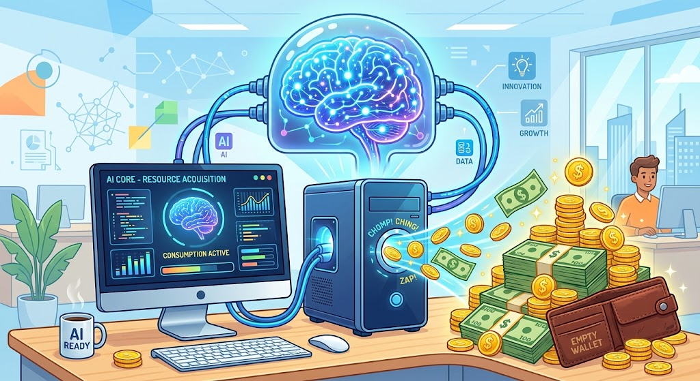
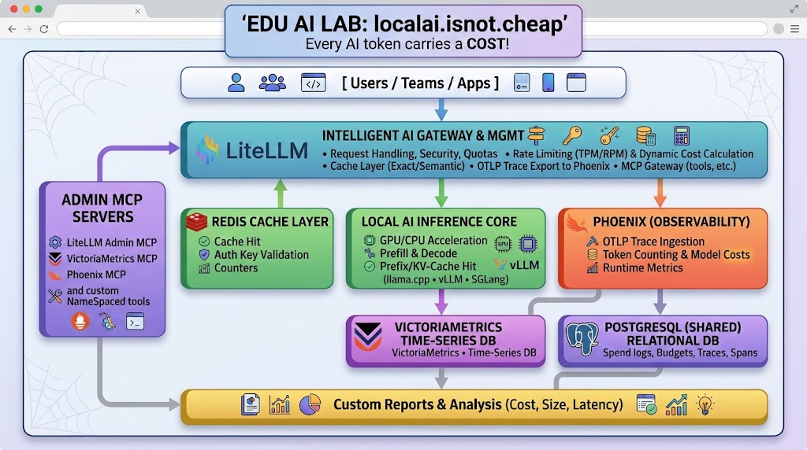
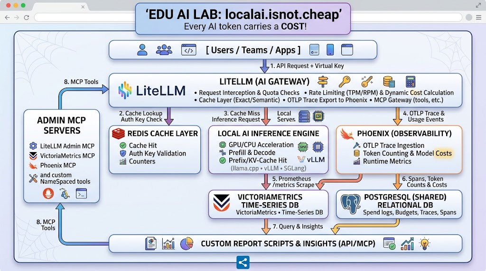
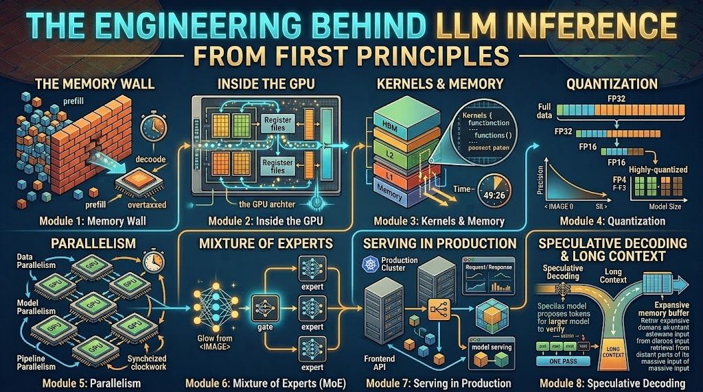

Hey!!! Local AI is not CHEAP at ALL! - Every AI token carries a COST!
Running local AI is far from free - it simply shifts the invoice from a cloud vendor to your own balance sheet.
Between high-end GPU based systems, surging electricity and cooling bills, server maintenance, and the specialized engineering talent required to keep inference pipelines optimized, self-hosting carries in real life massive capital and operational expenses.
Metering and billing internal teams by the token is essential: it creates accountability against wasteful compute loops and directly amortizes those upfront infrastructure, pipelines, and staffing investments.
So how to measure and bill AI tokens in small AI Lab?
This is tricky architectural and engineering challenge with lot of tradeoffs, ideal EDU AI LAB material.
Here I share minimal setups distilled from the larger ones I use in enterprise workshops, to demonstrate the complexity of local AI inference engineering in practice and the role of caching.
Tokenomics - cost is more than just tokens. It spans hardware and power, pipeline complexity, observability (can you find and debug it?), reproducibility, and manageability. Every form of spend needs to be metered at the end.
Agentic Infrastructure - the AI evolution beyond IaaS: agents and harnesses are directly exposed to infrastructure through MCP servers and skills following dynamic rules (not fixed templates), turning infra access into governed, tool-based operations.

Architecture - LiteLLM meter-and-bill gateway in front of local engines, with Redis caching, Phoenix observability, VictoriaMetrics metrics, and shared PostgreSQL under one roof.

How it works - Every token carries a cost so we cache wherever we can!!!

Mission - inference engineering is emerging as its own specialization. Just like you cannot learn programming by watching videos, you cannot learn this field from tutorials alone: you need infrastructure you can touch, feel, and explore, where tradeoffs and side effects show up for real. The EDU AI LAB is a single node, but it carries enough complexity to demonstrate most inference-engineering principles from a systems-thinking perspective - turning reading into practice and letting you safely explore the tradeoffs of the field. You get the idea. Local AI is not CHEAP (GitHub Repository)
Deep dive materials about Inference Engineering - for self study.
Inference Engineering - by Philip Kiely (Baseten). Now in its 3rd edition and free as a PDF.
A book for engineers who want to understand the technologies that power every AI company and application in the world.
Covers the inference stack end to end - GPU kernels and the memory wall, KV-cache and prefix caching, quantization, batching, and serving in production - the same tradeoffs the EDU AI LAB demonstrates live.
What is Prompt Caching? Optimize LLM Latency with AI Transformers
How KV Cache Speeds Up LLMs for Faster AI Models on GPUs
First Principles

The Engineering Behind LLM Inference - From First Principles
Must-study before serving any AI model to really grasp the tradeoffs.
PY (@thecommitlog) has excellent deep-dive videos (with sources) which can help you better understand the tradeoffs in Inference Engineering - they are great companions to the book by Philip Kiely.
The Memory Wall: Examines the bandwidth bottleneck between high-speed compute cores and memory during prefill and autoregressive token generation.
Inside the GPU: Explores hardware-level architectural components-such as streaming multiprocessors, registers, and cache hierarchies-that power modern parallel execution.
Kernels and Memory: Covers low-level GPU kernel design and optimization strategies to minimize memory access overhead and maximize tensor arithmetic throughput.
Quantization: Details techniques for compressing model weights and activations into lower-bit precision (FP16, FP8, FP4) to reduce memory footprint while preserving accuracy.
Parallelism: Breaks down multi-GPU scaling methods, including tensor, pipeline, and data parallelism, required to partition models too large for a single device.
Mixture of Experts (MoE): Analyzes dynamic routing architectures that activate sparse parameter subsets per token to increase model capacity without proportional compute costs.
Speculative Decoding and Long Context: Focuses on draft-and-verify decoding algorithms alongside specialized attention mechanisms designed to accelerate generation and handle expansive context windows.
Serving in Production: Addresses end-to-end deployment engineering, dynamic request batching, KV-cache orchestration, and system reliability for low-latency production APIs.
The Whole Stack: as wrapping bonus.
The Engineering Behind LLM Inference From First Principles - YouTube playlist:
Agentic Infrastructure
How will your future job look?
Infrastructure as Agents - Autonomous AI Agents behind your Infrastructure as Code!